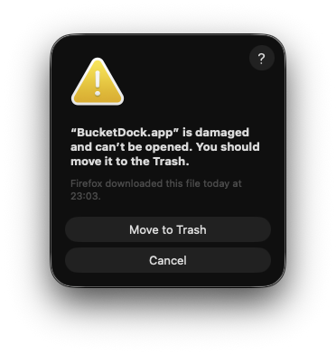

The “BucketDock.app is damaged” warning
This happens because the current public build is a developer preview. It is not Apple Developer ID signed and not notarized yet, so macOS keeps it in quarantine after download.
After you drag the app to Applications, open
Terminal.app and run:
xattr -dr com.apple.quarantine /Applications/BucketDock.app
open /Applications/BucketDock.app
Terminal is located at Applications →
Utilities → Terminal.